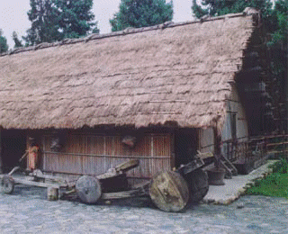
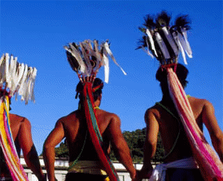
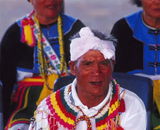
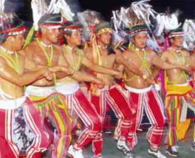

阿美族在臺灣分布極廣。傳統的阿美族為母系社會，婦女們負責採集食物與耕種；打獵、捕魚則專屬男性，透過男性年齡階層組織運作維繫部落的凝聚力。

阿美族的傳統生活領域包含花東縱谷以及海岸山脈以東的沿岸地區，以及屏東恆春附近。阿美族人其實有兩種自稱，一為 pangcah （邦咱）；一為
amis （阿美）。前者意指「人種、同族」之意，除了海岸的臺東成功至都蘭之間的部落之外，通用於其他部落；Amis
一詞原為「北方」之意，是卑南人用來稱呼這群「自北方來的人」，較常用於成功以及池上以南的部落。由於人口分布廣，各部落風俗不一，學者們又將阿美族依地理區域分為五群，由北而南分別為：南勢群、秀姑巒群、海岸群、卑南群、以及恆春群。隨著社會變遷，許多阿美族人選擇遷出以尋求學業、工作等機會，而擇居於都市邊緣，前仆後繼的移民往往形成新興部落，例如北臺灣的汐止三光社區與基隆八尺門社區等等。目前總人口數將近十六萬。
傳統的阿美族社會雖以母系社會為其特色，然而正如已故的花蓮縣水璉部落耆老帝瓦伊．撒耘（李來旺）所說，男性年齡階層組織才是阿美族社會的中堅份子。根據不同的部落（niyaro ），男子到了某一年齡（13-15
歲）前，就要開始準備加入年齡階層（稱為
pagarogay ），部落中年齡相仿的同儕再一定的年齡通過成年禮後，便隸屬同一階層（slah ），被賦予一個階級名稱（命名方式分為循環使用的通名制，以及創新的專名制），一起住進會所（taluan ），並開始在強烈的階序倫理指導下參與部落公共事務。在還未被納入國家體系以前，部落之間常因資源爭奪等而生齟齬，時有紛爭，爭戰與護衛部落便成為男性年齡層的主要任務之一；此外，雖然阿美族社會以農業為主要生產來源，並由婦女們負責採集食物與耕種，但是特殊的生產活動，如打獵、捕魚則專屬男性，且往往透過年齡階級組織運作，因此男性年齡階級的凝聚力，攸關部落命運，也成為部落年祭中的主體。
年祭是阿美族一年之中最重要的儀式。是為了感謝祖先與諸靈，賜下一年的豐收，並藉此凝聚部落的團結精神。

阿美族的年中祭儀含歲時祭儀與生命儀禮。
歲時祭儀包括了與農業生產相關的祈福儀式，如粟播種祭、粟收割祭，新穀入倉禮、以及年祭等；生命儀禮包括了出生與命名禮、成年禮、婚禮、喪禮等。此外，尚有以女性巫師 cikawasay
為主的占卜與驅邪等相關儀式。而阿美族的傳統樂舞，正是透過各項祭儀予以滋養。一年之中最重要的儀式就是年祭，依北、中、南部落不同稱為 malalikid（「馬拉力基」）、ilisin（「依禮信」）
或是 kiluma’an（「基魯馬安」）。過去年祭被誤譯為「豐年祭」，並被賦予大家一同飲酒、唱歌、跳舞的歡樂形象，甚至本末倒置受政府官員牽制更改祭典日期的現象，起因為對儀式意涵的誤解與不尊重。
不論名稱差異，年祭在阿美族具有核心的文化意義，是族人為了感謝祖先與諸靈，賜下一年豐收，並藉此機會凝聚部落的團結精神，因此其儀式的基調為「感恩與團結」，而儀式過程必須嚴守禁忌、要求嚴格，絕非一般局外人所能想像的。過去，儀式曾有歷時長達一個月的紀錄，日據時期對原住民十分忌憚，因此對族人聚集的祭典強加監控；現在則因社會變遷，儀式日程縮短，由三天到五天不等，儀式日期也從原有秋收前後，協調至暑假期間的七、八月輪番舉行。然而儀式的過程大體上包含下列小儀式：狩獵祭（限男性年齡階層參加）、捕魚祭（限男性年齡階層參加）、迎靈祭/祀靈祭（限男性年齡階層參加）、宴靈祭（女性與小孩開始可以加入）、情人之夜（以適婚年齡的未婚男女為主）、送靈祭（女性或全體，各部落不同）、捕魚祭（限男性年齡階層參加）。
年祭歌舞的內容大致是固定的，其歌舞平常不得演練。然而即便歌舞的形式有限，祭儀歌舞的成員、形式與功能，仍應不同情境而有差異：
1. 迎靈祭的男性歌舞：
過去男性成員在年祭開始前必須進行類似實習的野外求生與狩獵技能考驗，當他們遠從數十公里外的地點跑回部落時，必須在部落群眾面前通過公眾的檢驗。經過幾天的禁食、這些男性年齡階層成員（kapah），仍然必須鼓起剩餘的力氣，大聲唱歌、用力跳舞，否則，會成為公眾的笑柄。現在雖然時代改變，但是，歌舞成為體能考驗的意義仍然存在，kapah
們按著階層與長幼秩序羅列，奮力踏出整齊劃一的步伐，受圍坐在內圈的長老檢驗，稍有疏失，類似階層班長的 mama no kapah 就會糾正，輕則口頭訓斥，重則施以棍棒。
2. 宴靈祭：
迎靈祭之後，婦女小孩始得加入，祭儀歌舞就好像是祭典的召集令，當部落居民聽到廣場上 kapah
們的歌聲，就會開始聚集。循例男性依照長幼秩序排好隊伍，而婦女或是另成一列，或是加入自己的先生右側加入舞隊（在此情況下，未婚女子由 mama no kapah 帶到自己的心上人右方）；小孩則排在
pakarogay 之後。宴靈歌舞期間，仍然不得鬆懈。只要年長階層們還在舞隊中，年紀輕的階層就不能休息，依此類推，一輪的歌舞短則幾十分鐘，長則幾小時，最年幼的 pakarogay
往往要撐到最後一個音結束才能歇息。從祭儀樂舞中，明顯可見阿美族人嚴謹的倫理觀。
3. 情人之夜：
情人之夜指的是宴靈祭的最後一晚，接連幾天的勞役與體能試驗，這晚總算有放鬆的機會，各組男子歡樂歌舞，年輕未婚的男子則趁機向心上人表白，合意者藉由一同歌舞互訴衷曲。原來正是從年中祭儀中，善於歌唱跳舞的族人，學習到這麼特別的歌曲與舞步。換句話說，阿美族人也有自己的歌舞學校喔！今天，在阿美族的夏季歌舞學校裡，長老是老師群，愈年長的老師說話愈有份量。各年齡階層的最年長者，則是助教。儀式中，長老圍坐在內圈對年輕人品頭論足，有時鼓勵，有時警告，但大多採用「愛的教育」方法；或是乾脆以身作則下場示範教學一番，讓大家知道將還是老的辣！不過，最嚴格的是助教，誰可以當助教呢？長得帥、口才好都沒用啦！因為阿美族是個十分強調長幼有序的社會，年齡階層中最年長的就是整班的班長，是不折不扣的「老大」。他在祭儀歌舞中常常扮演黑臉，手拿著竹子或木條，如果有人腰彎得不夠低、腿抬得不夠高，他的臉就會拉下來，再不改進，‘啪’的一聲木棍就來了，毫不留情。（不過現在社會觀念改變，威權式的教育手段大多不管用了，許多時候，訓斥與恫嚇只是表面上的，大家不要太緊張喔！）
阿美族音樂可分為兩類，一是具有禁忌的祭典音樂；另一則是一般生活性音樂。傳統樂器包括口簧琴、鼻笛、弓琴等。

阿美族的音樂
阿美族音樂根據它的功能可分為：1. 娛神 2. 娛人 3. 自娛三種。
「娛神」音樂指的是祭祀活動中，針對特定的對象作有意義的訴求時，所呈現的音樂。這類音樂普遍出現在祭祀團體的祭儀活動及部落豐年祭中。歌詞方面領唱部份可以是針對人、事、物有即興的實詞內容，和唱部份則是以
ho、hay、yan 或 hay、ha、he 等襯詞作不同的排列組合。旋律除了領唱者可以依個人能力作些微的變化外，一般和唱部份都較固定不變。
「娛人」音樂通常是出現在聚會時，歡樂氣氛下所唱的歌謠。例如「迎賓歌」、「作客歌」或目前一般結婚典禮所唱的「歡樂歌」等。歌詞都可以應景作即興變化。旋律可以即興創作或依據一般歌謠之旋律。
「自娛」音樂則普遍出現在日常生活。例如一個人上山工作、在田間採野菜、拾海貝、餵家畜、放牛、砍柴、採藤、縫衣、編籃、哄小孩等。這類音樂主要是有身體律動配合的即興創作歌唱，為的是用自己的歌聲來慰藉身心的疲憊。
根據阿美族社會文化之生活背景，阿美族音樂可分為二大類：一是祭典音樂，二是非祭典音樂。祭典音樂指的是具有禁忌的儀式性音樂，例如「巫師祭」、「豐年祭」、「祖靈祭」等。非祭典音樂指的則是一般生活性音樂，例如「飲酒歡樂歌」、「迎賓歌」、「作客歌」等歌謠。
阿美族的傳統樂器
根據日治初期「臨時臺灣舊慣調查會」的《蕃族調查報告書》與凌曼立教授 （1961，P. 185-220）對阿美族物質文化（含樂器等）的調查結果，阿美族的樂器分為管樂、簧樂、擊樂、弦樂四類：
1. 簧樂器：
2. 管樂器：
3. 擊樂器：
4. 絃樂器：
另外，部份的阿美族人利用樹木的嫩葉做為吹奏的樂器，靠雙唇與舌頭調整音高、節奏，可以獨奏也可以為配合歌唱、舞蹈的伴奏。
以上為阿美族在日據時期、光復初期所慣用的樂器，其中直笛、口簧、弓琴、銅鈴等，在臺灣原住民各族之間，也都有類似同型樂器；木琴、木胴鼓、鐵製薩鼓宜為最有傳統色彩的古樂器，但現今已不容易再見。
老人聚會歌 (原舞者示範)
聚會歌是阿美族在聚會的歡樂場合下所唱的歌謠，歌詞都可以應景作即興變化，旋律可以即興創作或依據一般歌謠之旋律。
VIDEO
飲酒歡樂歌 (原舞者示範)
飲酒歡樂歌是一般生活性音樂，用身體律動配合即興創作歌唱，主要目的是以歌聲來慰藉疲憊的身心。
VIDEO
阿美族舞蹈的最大特色就是有舞必有歌，決定舞蹈之間差異的是歌曲，每首歌都搭配著各自的舞步，傳統樂舞之中以年祭歌舞保存較完整。

阿美族的舞蹈
阿美族人稱舞蹈為 sacro，並將舞蹈分為 malikuda （馬力固達）和 misalukiaw （米沙魯教）。malikuda
專指年祭歌舞，或男性歌舞；misalukiaw 包含一般歌舞，例如宴會、婚禮、男子從軍紀念等情境唱跳的樂舞；另指女性歌舞。一般而言，女性可以學習唱跳
malikuda ，但是男性則不習唱跳 misalukiaw 。
阿美族舞蹈的最大特色，就是有舞必有歌。現在我們常常聽到的「迎賓舞」、「豐收舞」，並非阿美族人自己對於舞蹈的分類方法，多是外人為了理解加諸的情境定義。實際上，決定舞蹈與舞蹈差異的是歌曲，而每一首歌都搭配著各自的舞步組合。從年祭、一般性歌謠到宴會場合的歌謠，不但歌曲的嚴謹性逐漸減少，舞步動作和歌曲之間的對應關係也應情境的活潑而鬆動，個人技巧也有較多的展示空間，產生了所謂接近即興創作的自由組合。
然而，年祭歌舞仍是傳統樂舞保存較完整、較不容易改變的部分，根據平珩（1987年）有關阿美族宜灣年祭歌舞的舞蹈分析中，阿美族年祭舞蹈有以下特色：
隊形：
舞步：
阿美族的舞蹈欣賞
1. 奇美部落的 chiupihai 之舞（俗稱奇美勇士舞）：
2. 都蘭部落的傘刀勇士舞：
港口部落樂舞
南部海岸地區的阿美族其祭儀歌舞隊形與舞步變化較多，樂舞型態較為傳統，其中港口部落（Makotaay）可為代表。
VIDEO
都蘭部落樂舞
都蘭部落的勇士舞，由年輕男性身著繁重的帽式與衣飾，高舉花傘，跳躍前進，可考驗年輕男性的體能。
VIDEO
奇美部落樂舞
奇美部落的勇士舞，由頭戴羽毛高冠、下半身僅著黑色短裙的年輕男性，手拉著手圍成一封閉圓圈，以大幅度的單腳前拋隨即向後拉開身體的動作著稱。
VIDEO